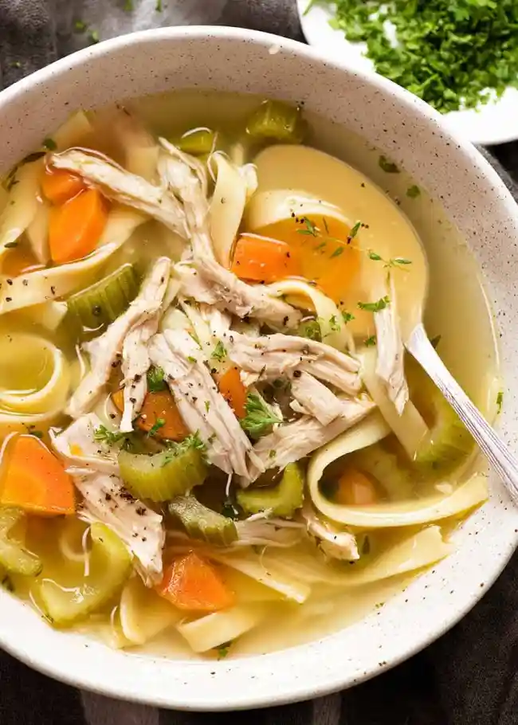

Chicken Noodle Soup

A chicken noodle soup recipe that's a very easy,
very good substitute for when you don't have time to make your soup totally from scratch.
Ingredients
- Onions and Celery
- Broth
- Chicken
- Noodles
- Carrots
- Basil and Oregano
Steps
- Melt butter in a large pot over medium heat. Add onion and celery and cook until just tender, about 5 minutes
- Add chicken broth , vegetable borth, chicken, egg noodles, carrots, basil, oregano, salt, and pepper.
Stir to combine and bring to a boil
- Reduce heat and simmer for 20 minutes